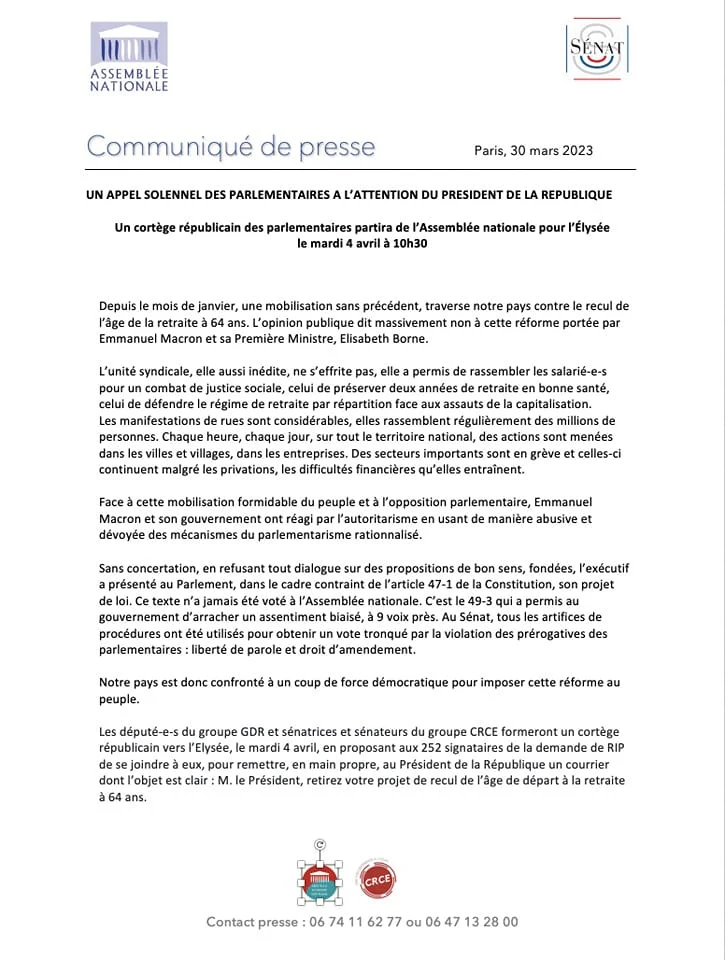

Publication d’archives
Appel solennel à l'attention du Président de la République :
Date indiquée par Facebook · 31 mars 2023
Texte conservé avec la publication
Contexte du dossier
L’annonce du 28 mars dans les Deux-Sèvres est suivie d’un compte rendu niortais dénonçant une consultation tardive. Macron et Borne promettent l’apaisement après avoir, selon la fédération, fermé le dialogue ; la formule de Véran présentant la loi comme déjà derrière nous est contestée. Les photos accompagnent une mobilisation de plusieurs milliers de personnes à Niort ; une vidéo annoncée le 30 concerne la dixième journée à Bressuire. Le 31 mars, un appel prévoit pour le 4 avril un cortège républicain de parlementaires entre l’Assemblée et l’Élysée, afin de remettre une demande de retrait au président. Il s’agit d’une initiative annoncée : cette publication ne prouve pas à elle seule son déroulement.

Sources
Archive rouge · export Facebook · AR-0002-FB-01699
À lire aussi · La 10ème journée de manifestation contre la réforme des retraites à Bressuire.